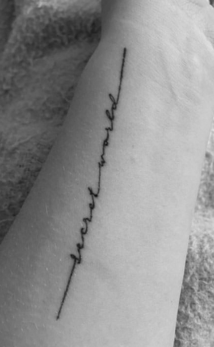

Secret World
Peter Gabriel
TATTOO TWO
Name - Abbey Gregory
Tattoo and placement - Left inside forearm.
How old are you? - 19 years old.
How old were you when you got this tattoo? - I had just turned 18 like a week after.
How many tattoos do you have in total? - 3
How much did it cost you? - $80
Where did you get it done? - Tattoo 34 on Hawthorne, Portland.
How long did it take? - 15 minutes.
How impulsive was it? - Literally not impulsive at all. I think about each tattoo for at least a year before I get them.
Does this tattoo have a meaning behind it? - Secret world is an album by Peter Gabriel. My dad and I watched the live concert movie all the time when I was little and it’s the album that is closest to my heart. An alternate meaning is that we all have a personal secret world that no one else knows.
Is it your own artwork? - Art is by the tattoo artists.
BACK BACK BACK BACK BACK BACK BACK BACK
